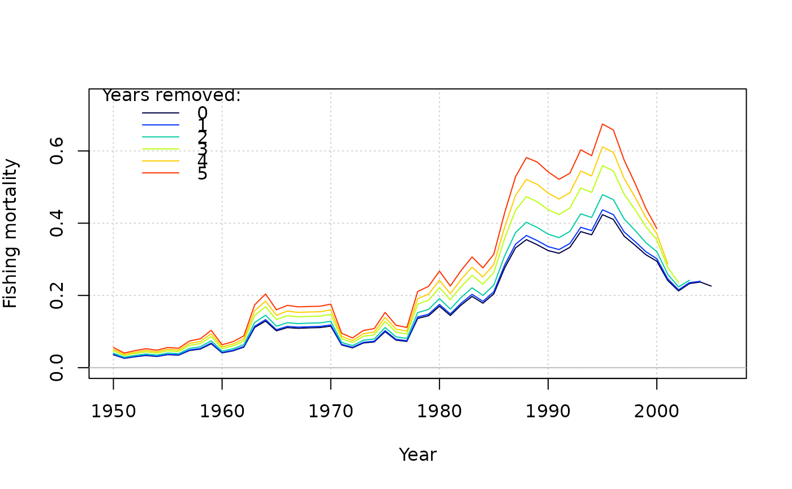
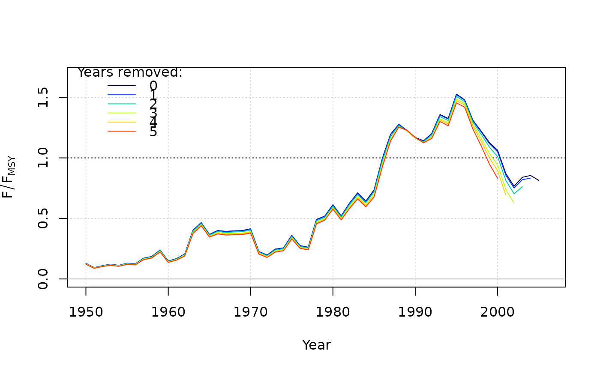
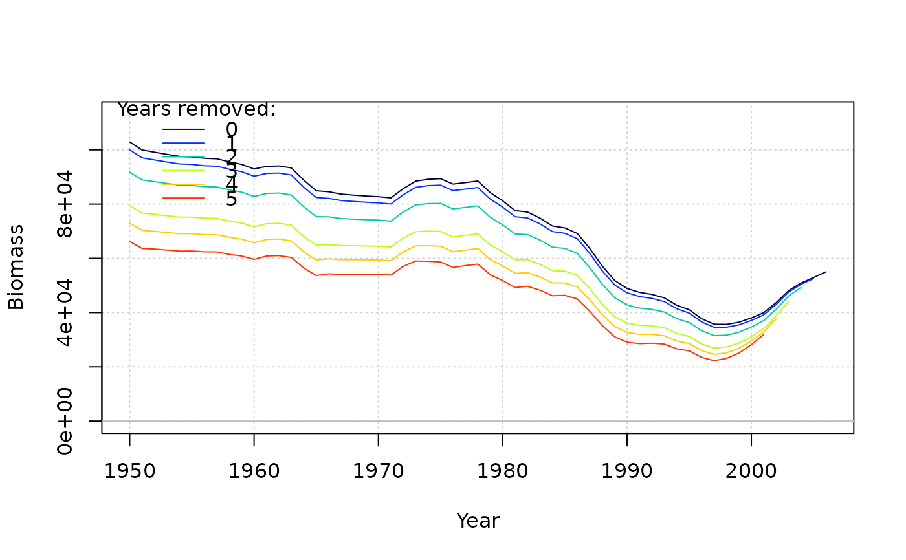
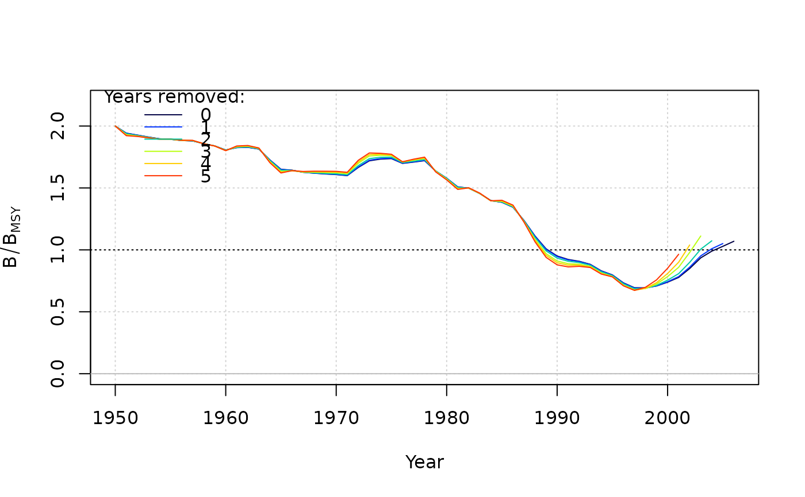
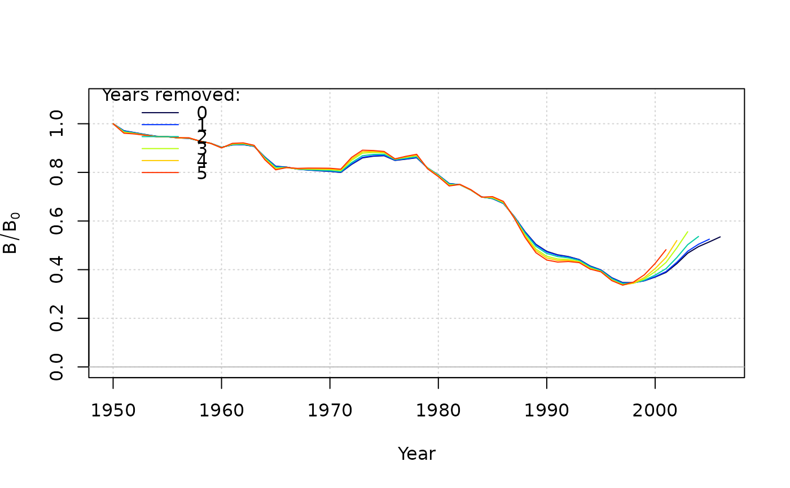

plot and summary functions for retro object.
Value
A series of plots showing retrospective patterns in fishing mortality, spawning biomass, recruitment, etc.
Examples
# \donttest{
res <- SP(Data = swordfish)
ret <- retrospective(res, figure = FALSE)
summary(ret)
#> Mohn's rho
#> Fishing mortality 0.130
#> F/F[MSY] -0.145
#> Biomass -0.091
#> B/B[MSY] 0.152
#> B/B[0] 0.152
plot(ret)





# }